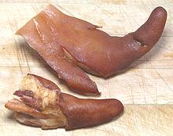
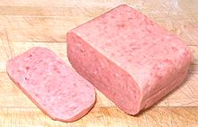
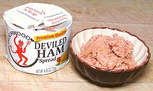

SAFARI
Users
General & History
Pigs have been domesticated and a major menu item for over 10,000 years. Many of the popular pork products we see today were originally developed as ways to preserve food for winter consumption. Today, they are appreciated for their unique flavors.
Products
Bacon
 Perhaps the most popular and flavorful cured pork product is bacon -
salt cured and usually smoked pork belly, Many favor it with an almost
religious devotion. There is also Back Bacon, called "bacon" in the British
Isles and much of Canada, and called "Canadian bacon" here. It is more like
a bland ham than like real bacon and is not worthy of religious devotion, but
is sometimes an acceptable breakfast ingredient if not overcooked. There are
other kinds as well, including Chinese and Hungarian bacon, so bacon is
a large subject so it has its own Bacon
page.
Perhaps the most popular and flavorful cured pork product is bacon -
salt cured and usually smoked pork belly, Many favor it with an almost
religious devotion. There is also Back Bacon, called "bacon" in the British
Isles and much of Canada, and called "Canadian bacon" here. It is more like
a bland ham than like real bacon and is not worthy of religious devotion, but
is sometimes an acceptable breakfast ingredient if not overcooked. There are
other kinds as well, including Chinese and Hungarian bacon, so bacon is
a large subject so it has its own Bacon
page.
Ham
 Ham is properly a pig's hind leg, but the term is also sometimes used for
cured shoulder. It may be fresh, but is most often cured in salt brine and
may then be smoked. Hams are cured throughout most of the world, including
China, but excepting Israel and the Muslim regions. Hams are a major subject
and have their own Hams page.
Ham is properly a pig's hind leg, but the term is also sometimes used for
cured shoulder. It may be fresh, but is most often cured in salt brine and
may then be smoked. Hams are cured throughout most of the world, including
China, but excepting Israel and the Muslim regions. Hams are a major subject
and have their own Hams page.
Smoked Pork Parts
 Salt curing followed by smoking has been a standard method of preserving parts of pigs for thousands of years. Today it is no longer simply a strategy for preservation, though it does extend the refrigerated life of many meats. Today it is valued mainly for the flavor and texture it imparts. This is an important enough we have given it its own Smoked Pork Parts page.
Lard
[Pork Fat]
Lard was once so villainized by the American Heart Association that Americans were afraid to use it - and much of this fear lives on. Now, with the AHA discredited for promoting deadly trans fats and other serious sins, lard is coming back. Top chefs are in the lead, because lard is a wonderful cooking ingredient. The AHA's accusations are not supported by demographics, and even by AHA standards it has a better health profile than butter.
Lard adds flavor and "mouth feel" to food, and solves many sticking problems in frying. It is the major cooking fat in many ethnic cuisines and much used in European cooking. You cannot cook Hungarian if you don't use lard.
There is a problem though. That blazing white stuff sold in markets
is highly processed, bleached, hydrogenated, deficient in flavor and no
longer at all a natural product. It sometimes even includes trans fats.
Don't buy it - render your own. It just isn't at all hard.
Details and Cooking.
Pork Fu / Pork Sung
[Pork Floss, Meat wool, Meat floss, (English); Rousong (China); Thit Chà Bông (Viet)]
Pork Fu and Pork Sung (slightly different process) are very popular in
Chinese cuisine, particularly as a topping to add flavor to bland
ingredients such as rice congee and tofu. Here in Los Angeles, every
Asian market is well stocked with these. The photo specimens are Fu on
the Left, Sung on the right.
Details and Cooking.
Pickled Pig Parts
 Skins, Hocks, Feet, Ears, and yes, even Snouts are popular as pickled snacks.
While I've found all the others as commercial products here in Los Angeles,
the snout in the photo is one I pickled myself. They are sold mainly in the
big pig producing regions, carefully packed in jars with their noses pressed
against the glass. The Asian markets here have plenty of fresh snouts so you
can pickle your own.
Skins, Hocks, Feet, Ears, and yes, even Snouts are popular as pickled snacks.
While I've found all the others as commercial products here in Los Angeles,
the snout in the photo is one I pickled myself. They are sold mainly in the
big pig producing regions, carefully packed in jars with their noses pressed
against the glass. The Asian markets here have plenty of fresh snouts so you
can pickle your own.
In times past, any reputable meat market had a huge jar of pickled pig
feet on display, and that's how they're best (or, make your own). Put up in
jars, those from major brands can be really awful, but some
Mexican ethnic brands are decent. In my vegetarian days, I'd occasionally
succumb to the lure of a jar of pickled pig feet. Pickled pig parts now
have their own Pickled Pig Parts page.
Pork Rinds - Chicharrónes
The usefulness of pig skins goes far beyond making footballs. Unlike those of cows, sheep goats, camels, horses, dogs and cats, they are highly desirable as snacks, in Asian salads and similar edible delights.
Most familiar
to Americans are Pork Rinds, puffy deep fried pig skin. While they have a
bad image, they are actually much less fatty than potato chips and contain
plenty of useful protein. They were wildly popular during the Atkins Diet
craze. Commercially, they are usually a bit too salty, but you can make
better ones yourself following our "no spatter" recipe for
Chicharrónes.
The skins can be had from meat markets serving a Latino community. For
details see also our Pig Skins page.
Salt Pork
Salt Pork is salt cured pork belly, the same as bacon but not smoked, and with the skin on. It was formerly a very popular ingredient in American cuisine, but fell out of favor due to the American Heart Association's misguided vendetta against the natural fats we evolved with in favor of deadly trans fats. Back in the mid 19th century Americans practically lived on pig fat, and congestive heart disease was almost unknown then. This was actually pointed out by an elderly cardiologist at the kick-off for the AHA's "Heart Healthy Diet". He declined to endorse the diet. Details and Cooking.
Salo
[Salo (Ukraine, Russia); Slonina (Poland); Slanina (Romanian); Slanina (Chech, Slovak); Spekis (Latvia); Lasiniai (Lithuania)]
This is salt cured pork fat back. It may be brine cured or dry salt cured,
as was the photo specimen. It usually has a layer of skin, and sometimes
a thin layer of meat on the other side. East Slavic versions are
sometimes cured with salt and paprika, while South Slavic versions are
sometimes smoked. Salo may be slice thin and eaten raw on rye bread, or
similarly, or it may be cooked, used in recipes much like Salt Pork.
Details and Cooking.
Guanciale
[Italian Jowl Bacon]
This is pork jowl (cheeks) rubbed with salt, sugar and spices to give it
a non-smoked cure. It is used as a flavoring ingredient in central Italy,
particularly Umbiria and Lazio. It is not easy to find, and a bit
expensive, in North America. Pancetta is often mentioned as a substitute,
but testing at Cooks Illustrated found American Salt Pork more suitable.
Photo @copy; i0117
.
Hog Jowl
[Pork Jowl, Jowl Bacon]
This product may be made with or without smoking. Salt cured and unsmoked is similar to the Italian Guanciale, but with simpler seasoning. Salt cured and smoked it is very similar to slab bacon. Hog Jowl is fattier than regular bacon, and the fat is purer, rendering rather easily. Hog jowel is very popular in the American Souteast. It is used as a seasoning in bean stews and with cooked greens (collards, mustard greens, etc.), but can also be fried up like regular bacon.
The photo specimens (smoked) were purchased at a large multi-ethnic
market in Los Angeles with a significant (about 20%) black clientel.
The larger of the photo specimens was 6-3/4 inches long, 2 inches thick
and 2-1/2 inches at its widest.
Details and Cooking.
Pancetta
 [Italian Bacon]
[Italian Bacon]
This is pork belly rolled up into a cylinder and given a salt cure, but it
is not smoked. This product is often called for in Italian recipes and is
commonly available in the service deli of well stocked meat markets. Subst:
Salt Pork.
Sausage & Salami
 Pork is the premier ingredient for sausages and salamis of all kinds, easily
beating out beef, lamb, chicken and all others combined. Pigs provide both
the content and casings to stuff it in. No other beast can match the unique
combination of taste and texture. Even beef owes its distant second place
mainly to religions forbidden to eat pork. Sausages are a major category
and have their own page, Sausages.
Pork is the premier ingredient for sausages and salamis of all kinds, easily
beating out beef, lamb, chicken and all others combined. Pigs provide both
the content and casings to stuff it in. No other beast can match the unique
combination of taste and texture. Even beef owes its distant second place
mainly to religions forbidden to eat pork. Sausages are a major category
and have their own page, Sausages.
SPAM
 SPAM is a construct from "Spiced Ham", and was first produced by Hormel Food Corporation in 1937. It is a canned pre-cooked meat product which has ham in it, but not as the major ingredient which is pork. It's popularity has been greatly enhanced worldwide by war and disaster. After WWII, American soldiers swore they'd never touch SPAM again so long as they lived, but soon succumbed to nostalgia. In England it is still remembered fondly as a major factor in the country not starving during the war. In Asia, also introduced by war and disaster, it is so favorably viewed it is made up in gift sets to be presented to the hostess when invited to dinner. A number of Asian dishes in the Philippines, China and Japan now incorporate it as a feature ingredient.
US SPAM consumption averages 3.8 cans per second. That's SPAM, not
Spam or spam, which are names for unwelcome emails. Ingredients: Pork with
ham, salt, water modified potato starch, sugar, sodium nitrite. There are
now a number of variations, the most common of which is Spam Lite, which
includes mechanically separated chicken as well as the traditional pork
and ham.
Deviled Ham Spread
 This product was developed by the William Underwood company in 1868 and is now the property of Pillsbury Company. It is generally used as a spread on crackers and in sandwiches. Texture is much like canned tuna (the kind without big solid parts - do they still make any with solid parts?). The flavor is a little like it too, but it has noticeable chili heat (the "deviled" part). The devil now on the can is a much friendlier looking guy than on the original cans. Ingredients: ham (cured with water, salt), brown sugar, sodium nitrite, seasoning (mustard flour, spices, turmeric).